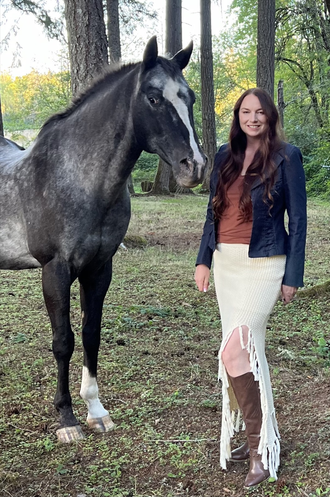
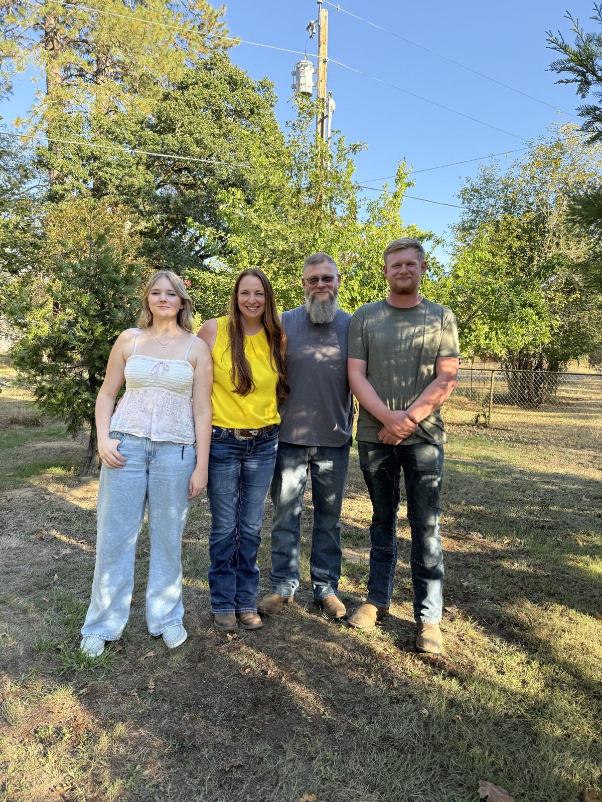
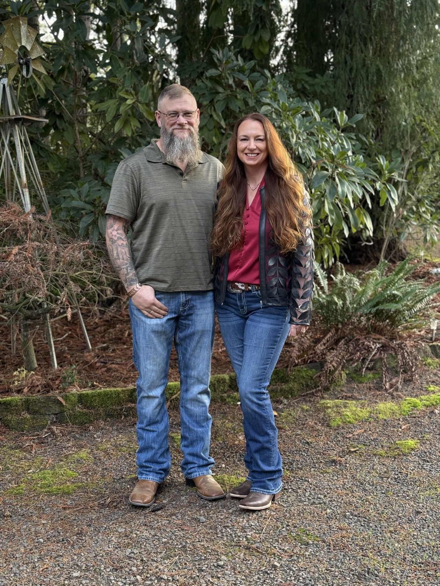
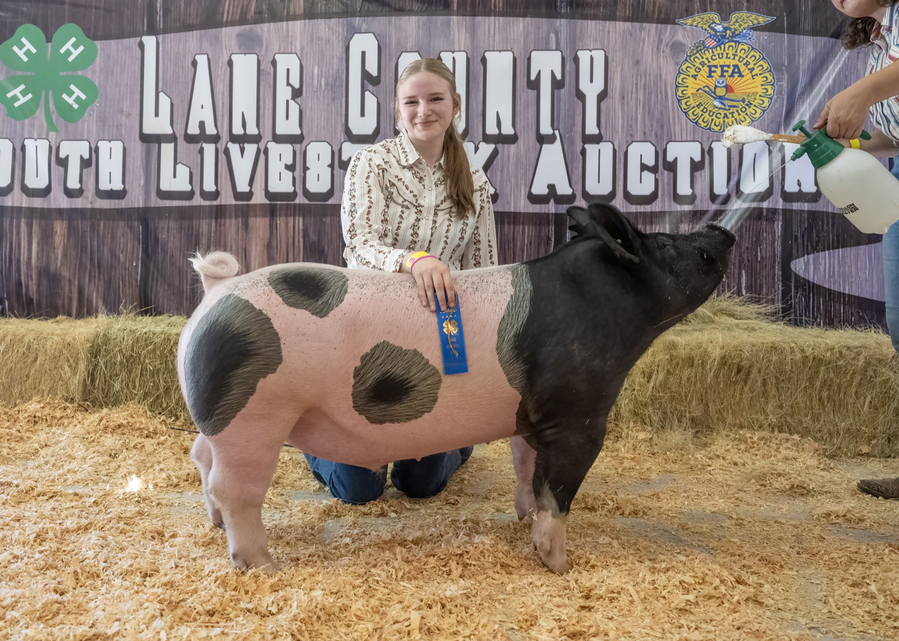

I grew up in a 4-H family in rural Oregon. Before real estate, I spent two decades in commercial lending — underwriting rural transactions, working with appraisers, and learning how complex deals actually close.
That background is why my clients hire me. I understand wells, septic systems, easements, and the financing structures that make rural property sales work. I don’t learn on the job — I brought the expertise with me.

My path to real estate was not typical. I spent over twenty years in commercial banking, specializing in agricultural and rural lending. I evaluated properties, assessed risk, and structured financing for farms, timber operations, and rural businesses across Oregon.
That experience gave me something most agents do not have: a deep understanding of how lenders think, what appraisers look for, and where rural transactions fall apart. When I transitioned to real estate, I brought that institutional knowledge with me.
Today I serve buyers and sellers throughout Lane, Linn, Benton, and Douglas counties. My specialty is rural and acreage properties, but I work with first-time buyers, relocating families, and investors across the region. Every client gets the same thing: honest advice, thorough preparation, and someone who shows up.
I am licensed with Real Broker LLC and live in the community I serve. When I am not working, you will find me with my family, volunteering at local events, or somewhere outdoors in the Willamette Valley.




Community, honesty, hard work, and showing up — those are not marketing slogans. They are how I was raised, and they are how I run my business. Every client is a neighbor, and every transaction is a handshake.

Whether you are buying your first home, selling acreage, or just exploring your options — I am here to help.
SCHEDULE A CALL →